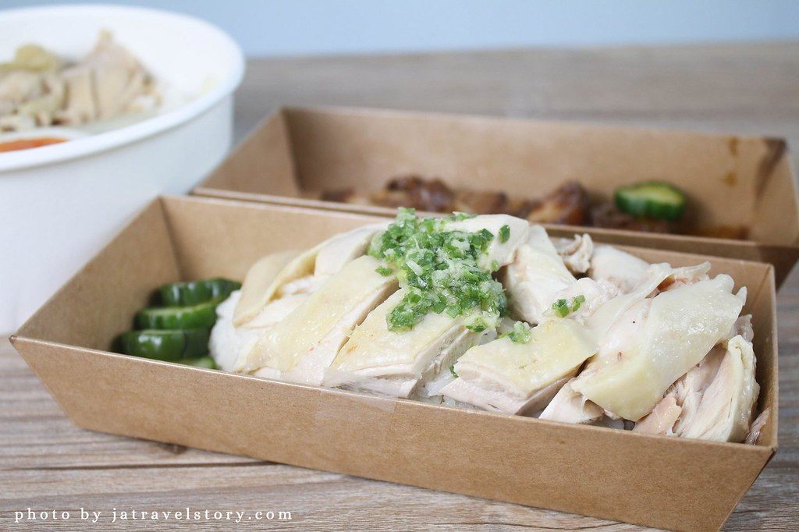
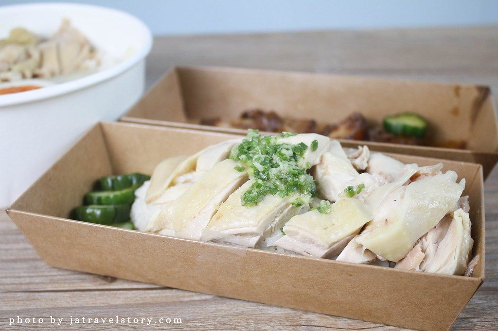

捷運松山新店線美食介紹
捷運公館站
 

站時可以
店家介紹 📄
以外帶為主的餐廳，拿了就可以走，適合趕時間、不能坐在餐廳吃飯的人店內只有一張桌子，內用要站著吃
店內環境
只有一張桌子
餐點價格 💰
依菜單上為主。
- 服務方式:內用⭕️、外帶⭕️、外送⭕️
- 營業時間🕒：早上11:30-晚上9:30
- 地址:台北市中正區羅斯福路四段24巷12弄7號
- 交通🚇:距離捷運公館站步行約2分鐘
- Google地圖
- Googl評分:4.7⭐️


無名雞蛋糕
店家介紹 📄
喑啞夫妻賣的雞蛋糕，口感鬆軟好吃，不用等太久就能達到餐點!
店內環境
小攤販
餐點價格 💰
依菜單上為主。
- 服務方式:內用❌、外帶⭕️、外送❌
- 營業時間🕒：下午3:00到晚上10:00(每周三及颱風天公休)
- 地址:台北公館水源市場後方巷口(台北市大安區汀州路三段253號)
- 交通🚇:距離捷運公館站步行約3分鐘
- Google地圖
- Googl評分:4.7⭐️

胡饕米粉湯黑白切
店家介紹 📄
店內主要是以米粉湯為主，另外也有賣一些麵類、飯類、便當類小菜、湯類、飲品等。必吃美食有乾麵大碗加溏心蛋乾麵上面淋有不少肉燥看了就讓人口水直流，吻仔魚米粉湯吻仔魚帶有鮮味，讓整碗米粉湯吃起來更加的鮮美可口 招牌滷三寶裡面有豬耳朵、嘴邊肉、豬大腸，每一樣都滷的非常入味而且口感極佳。
店內環境
古早味風格裝潢
餐點價格 💰
依菜單上為主，幾乎都是銅板價。
- 服務方式:內用⭕️、外帶⭕️、外送⭕️
- 營業時間🕒：早上11:30~21:00
- 地址:台北市中正區羅斯福路三段284巷8號1樓
- 交通🚇:距離捷運公館站步行約4分鐘
- Google地圖
- Googl評分:4.0⭐️

公館清蒸肉圓
店家介紹 📄
他們只賣三樣東西肉圓、四神腸湯、貢丸湯，樣式不多。肉圓是清蒸裡面有二粒為一份，皮吃起來軟Q軟Q搭配醬汁味道清爽不失味!他的內餡口感極佳~ 軟軟帶有微微的彈性一放入口中，很快就化開了。在台北公館夜市裡算是非常便宜的美食小吃店，味道表現也不錯!
店內環境
環境陽春、半開放式、夏天悶熱。
餐點價格 💰
依菜單上為主，幾乎都是銅板價。
- 服務方式:內用⭕️、外帶⭕️、外送❌
- 營業時間🕒：早上11:00~晚上10:00
- 地址:台北市中正區汀州路三段150號
- 交通🚇:距離捷運公館站步行約3分鐘
- Google地圖
- Googl評分:4.1⭐️